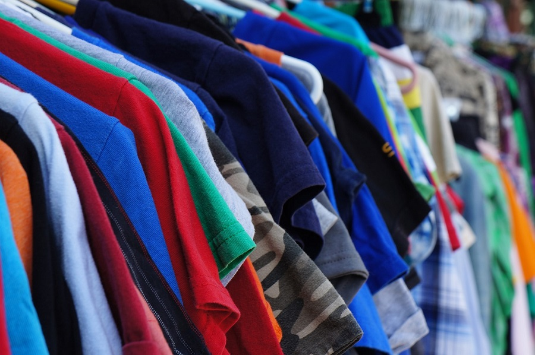
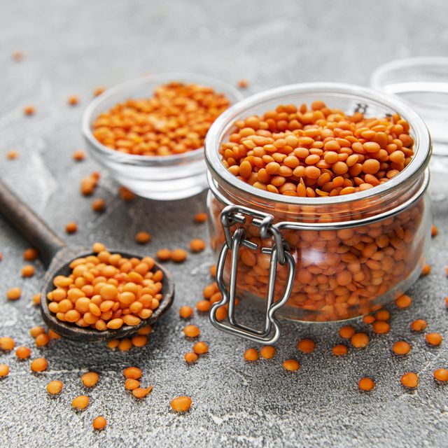

Fundación Safa
La mejor funcdación solidaria de Sevilla, desde 2005 intentamos que todos tengamos una oportunidad y por ello ayudar a los que mas lo necesitan
Leer masLa mejor funcdación solidaria de Sevilla, desde 2005 intentamos que todos tengamos una oportunidad y por ello ayudar a los que mas lo necesitan
Leer masEn la página principal, busca y haz clic en el boton "Solicitud" donde
serás redirigido a nuestra página de solicitar.
Aquí encontrarás opciones para seleccionar
la canrtdad que deseas solicitar.
Aquí también encontraras un lugar donde poner tus datos personales necesarios para la solicitud.
Cuando todo lo anterior esta terminado,
necesitas ir al punto de solicitud mas cercano para dejar la solicitud
para dejar la solicitud que ha proporcionado en el paso anterior.
Hecho esto solo queda esperar a que la solicitud sea efectuada y una persona
haya recogido su solicitud.
Si eres Donante puedes donar tanto ropa, comida,
juguetes o artículos como mantas o objetos útiles todo
es bienvenido
Si eres Solicitante puedes swolicitar tanto ropa, comida,
juguetes o artículos como mantas o objetos útiles todo
mientras que se vaya a usar por una buena causa
Si eres Solicitante puedes swolicitar tanto ropa, comida,
juguetes o artículos como mantas o objetos útiles todo
mientras que se vaya a usar por una buena causa